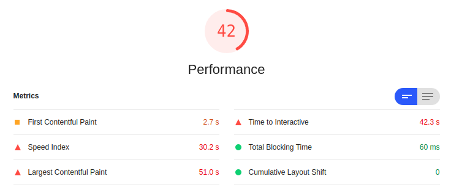
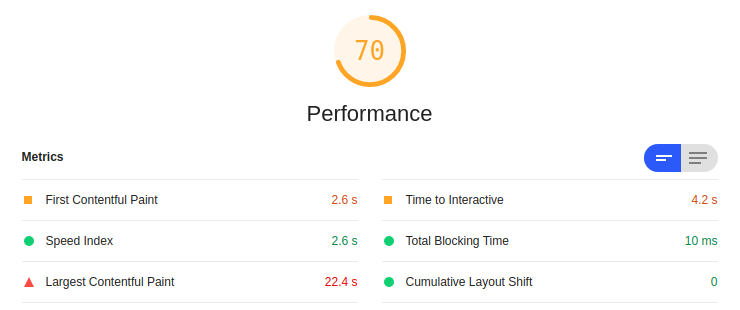

The easiest way to lazy-load images
Recently, I’ve been interested in improving the performance of my website, especially on the ‘Drawings’ page, where I showcase some of my artwork. Images are often the most common cause of poor website performance, due to their large file size. I found a neat tool called Lighthouse that helps debug performance issues and provide suggestions for improvements.
I ran Lighthouse on the previous version of my drawings page, and got the following:

Here are the definitions of each metric, according to Lighthouse:
- First Contentful Paint (FCP): how long it takes the browser to render the first piece of DOM content after a user navigates to your page
- Time to Interactive (TTI): how long it takes a page to become fully interactive
- Speed Index (SI): how quickly content is visually displayed during page load
- Total Blocking Time (TBP): total amount of time that a page is blocked from responding to user input, such as mouse clicks, screen taps, or keyboard presses
- Largest Contentful Paint (LCP): when the largest content element in the viewport is rendered to the screen
- Cumulative Layout Shift (CLS): sum total of all individual layout shift scores for every unexpected layout shift that occurs during the entire lifespan of the page (not very applicable in my case)
Clearly, the metrics in red are opportunities for improvement. Images are the usually the most common cause of poor TTI and SI metrics. There are two strategies for making images load more efficiently: properly size images and offscreen images.
I draw in Procreate, and typically output images that are 2078x2078 in dimensions (or around that size for non-square canvas). Even though I generate 250x250 thumbnails on the website, these files are way too big. I used ImageMagick and resized them down to 1000x1000.
convert old-image.png -resize 1000x1000 new-image.png
This change, however, was not enough. 1000x1000 is still a considerable size, and rendering all images at once continues to generate poor TTI and SI metrics. My drawings page displays a grid of thumbnails that only show the full-res image after you click on a particular thumbnail. One idea is to defer loading the full-res image until after a user clicks on a thumbnail.
To achieve this, I used lazysizes for lazy loading images. Lazy loading is the approach of waiting to load resources until they are needed, rather than loading them in advance. This can improve TTI and SI by reducing the number of resources that need to be loaded on initial page load.
3 Steps (I’m using Hugo):
- Download
lazysizes.min.jsand place instatic/jsfolder - In
layouts/partials/head.html, add<script src="/js/lazysizes.min.js" async=""></script> - In
layouts/drawings/list.html, addlazyloadclass to full-res images and changesrctodata-src:
<img class="d-block d-sm-none lazyload" data-src="../{{ .image }}" alt="{{ .alt }}">
Here is my new performance results after resizing and lazy-loading:
.
The most significant improvements are in TTI and SI; they each had decreased by more than 90 percent! LCP is still not ideal at around 21 seconds, but now it is due to render-blocking Javascript and CSS resources as opposed to large image files.